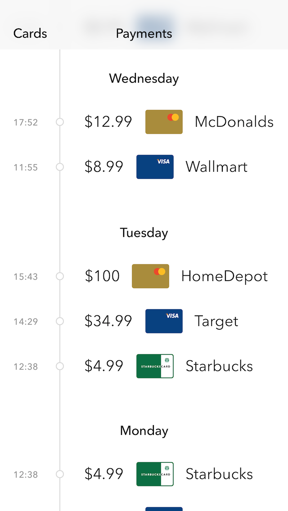
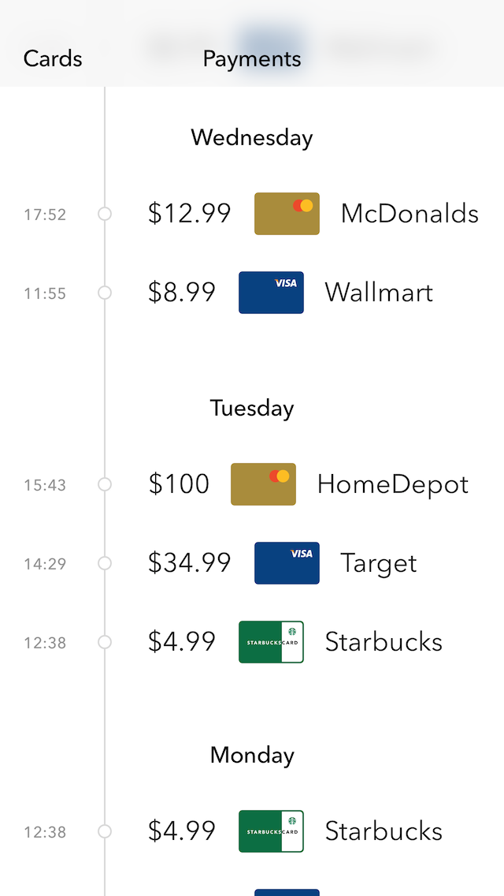

App design
Et Kom/IT projekt lavet af Jeppe Krogh og Rasmus Mikkelstrup
Den 7. april 2016 fik vi stillet til opgave at lave en app til en mobiltelefon. Opgave havde kun et konkret krav; der skal være interaktion mellem appen og brugeren
Ideudvikling
I starten af projektet havde vi flere idéer vi hoppede mellem og vi kunne ikke lande på noget konkret. Vores første idé var en app der kunne forbinde til din computer hjemme og lave en scanning af dit netværk, hvorefter den ville lave en liste over enheder. Vi indså ret hurtigt at denne app havde en meget specifik målgruppe og derved ville være svær at lave test af. Derfor fortsatte vores søgning efter en idé.
Denne søgning fortsatte indtil Rasmus fandt disse billeder på hjemmesiden Dribble, der er en hjemmeside hvor man kan hente inspiration til at lave design. Billederne viser en ide til en app der kan gemme og anvende flere kort til at betale med.
Herfra var vi meget fast besluttede på at vi ville lave en app til betaling med mobilen. Efter at have nået denne ide påbegyndte vi arbejdet på at lave vores app. Foruden at kunne betale når man køber ting, vil appen samtidig holde styr på og benytte mulige medlemskort og ydermere kunne bruge gavekort. Nedenfor ses hvad vi nåede frem til.
Forundersøgelse
SWOT-analyse
I dette projekt har vi i forbindelse med udviklingen af appen, udarbejdet en SWOT-anaylyse(der står for Strengths, Weaknesses, Opportunities og Treats) og i denne analyse blev vores app "solgt" til virksomheden NETS, der er den virksomhed der står for store dele af alle betalinger der bliver foretaget i butikker med betalingskort. De fire punkter i SWOT-analysen har vi opsummeret som design, sikkerhed og videreudvikling og her ses vores færdige analyse:
Design. Vores app har et stilrent og moderne design. Målet med designet er at det skal være så let at overskue og rent at alle skal kunne bruge det. Dog på trods af dette har vi stadig nogle små aspekter af vores design som ikke er helt i orden på nuværende tidspunkt, men disse er dog under udarbejdning. Ud over det flotte design har vi også lagt et stort fokus på vores funktionalitet. Vi ønsker at gøre det så let at bruge app’en som overhovedet muligt og det er også derfor at vi bruger fingeraftryk til at verificere køb, så slipper man for at skulle huske en masse koder, samt at skulle skrive disse koder om og om igen, det skal man kun gøre en enkelt gang og det er når kortet sættes ind i vores system.
Sikkerhed. Sikkerhed er det klart største aspekt af vores app. Vi vil altid arbejde hårdt på at sørge for at vores brugers data aldrig nogensinde skal blive lækket til offentligheden. Med dette i mente bruger vi fingeraftryk til de mest følsomme dele af vores app, så i det uheldige tilfælde af at en af vores brugere mister sin enhed og hvis nogen skulle få adgang til vores app kan vedkommende ikke få adgang til brugerens personlige data.
Videreudvikling. I fremtiden er planen at følge med med tidens design og følge med som nye betalings- og gavekort dukker op. Ud over dette vil vi gerne tilføje muligheden for at kunne se fulde kvitteringer på det som man har købt i den pågældende butik. Endvidere vil det være en fantastisk mulighed for at vi kan implementere at medlemskort automatisk kan blive scannet så vores brugere nemt kan få deres point eller rabatkuponer eller hvad de ellers kan få gennem deres medlemskab. Ydermere så regner vi med at tilføje statistik til app’en så brugeren har mulighed for at se hvor og hvor meget de har brugt ved de forskellige betalinger.
Målgruppe
Foruden en SWOT-analyse, lavede vi også en målgruppe undersøgelse. Denne ser således ud:
Målgruppen til denne app, vil være personer i det blå segment af Minerva-modellen.
Dette er fordi at personer i det blå segment, ofte er de mest moderne og materialistiske individer, med fokus på at tjene penge. Derfor kan det tænkes at disse personer er i besiddelse af flere kort, som kan være svære at holde styr på.
Dette hjælper vi med vores app, der sørger for en nem måde, hvorpå man kan holde styr på alle sine kort. Samtidig med at tilføje elementer af den nye udvikling i betaling med mobilen.
Foruden personer med flere betalingskort, er appen også oplagt for personer der modtager mange gavekort eller har mange medlemskort til fx Matas eller Coop, da appen selv vil aktivere kundekort og informer brugeren hvis vedkommende har gavekort de kan bruge.

Design
I designet af denne app har vi holdt os til de guidelines der findes på Apple’s iOS udviklingsside (se nedenfor) og kigget på hvordan vores app vil se ud på en iPhone. Dertil hører også den kendste sløring man ser igennem store dele af styresystemet. Dette ses her på billedet, under teksten ‘Payments’, hvor der ligger et kort der er sløret. Ydermere er der også brugt de samme skrifttyper og de farver man også finder gennem hele styresystemet.
Sammen med dette var fokusset også sat på at lave et simpelt og overskueligt design, så selv en 3-årig vil kunne bruge den.
Animationerne i appen er også bestemt ud fra det design man finder i iOS, mens der også er lavet understøttelse for enhedens fingeraftrykslæser.
Apple iOS design guidelines vi har fulgt
Klarhed. Igennem appen er al tekst en læselig størrelse, ikoner er skarpe og tydelige, og med et forhøjet fokus med funktonalitet der motivere designet. Tomme rum, farve, typografier, grafik og interface elementer fremhæver diskret vigtigt indhold.
Ærbødighed. Flydende bevægelser og en skarp, smuk interface hjælper folk forstå og interagere med inhold uden at kæmpe mod det. Indhold fylder hele skærmen, mens gennemsigtighed og sløring hentyder til noget mere. Minimalt brug af kanter og skyggeeffekter holder interfacet let og luftigt, mens det sikrer at inholdet er altafgørende.
Dybde. Tydelige visuelle lag og realistisk bevægelse formidler hierarki og facilitere forståelse. Berøring og opdagelse forhøjer glæde og muliggøre adgang til funktionalitet og yderligere indhold uden at miste kontekst. Overgange sørger for en fornemmelse af dybde, som du navigere gennem indholdet.
Guidlines hentet fra Apple’s officielle iOS design guidelines
 

Eksempel på brug
I eksemplet her til venstre, ses et eksempel på, hvordan appen ser ud når den er i brug. Her ses det hvordan man nemt og simpelt kan skifte mellem hvilket kort man ønsker at bruge til sin betaling. Nedenunder ses et eksempel på hvordan ens betalingshistorik kan se ud. Disse to eksempler viser det simple og intuitive design der er blevet brugt i appen. Ydermere, som et mere detaljeret eksempel på brug, har vi udarbejdet et flow-chart der viser hvordan appen vil bruges. Dette flowchart ses nedenfor.
Jeppe Krogh Laursen © 2017